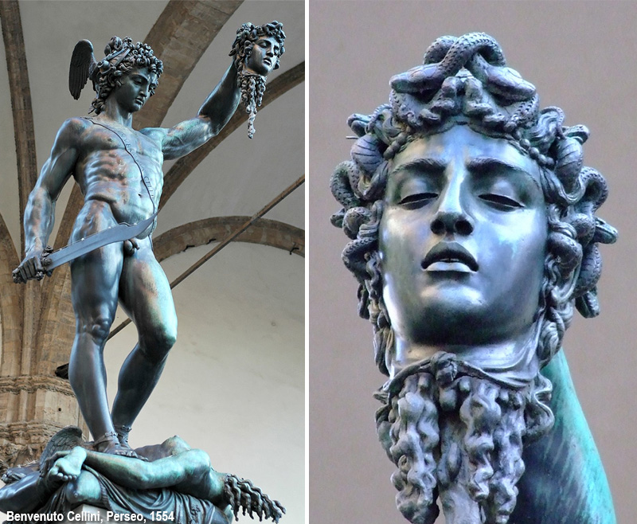
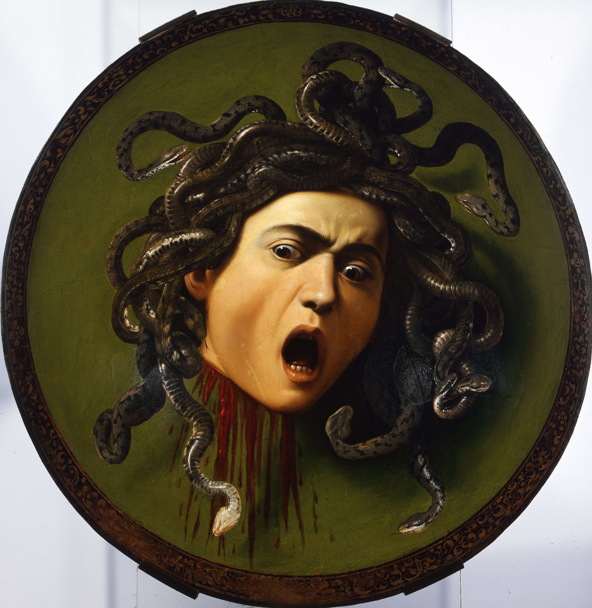

Avatar
Laser vincente
▶Laser vincente
Short avatar clip with a direct visual signal of defense, reaction and active protection.
Hai raggiunto il limite massimo di zoom.
Per ingrandire gli elementi, usa la LENTE-MOUSE:
passa il cursore sopra qualsiasi elemento per attivare l'ingrandimento lenticolare!



People are rarely trapped by a single trick. In most cases the scammer combines urgency, fake authority and an apparently convenient offer. The real defense is to slow the process down, verify every detail outside the scammer's channel and refuse to move money until the basic checks are complete.
Use these thematic buttons to jump directly to the risk area you want to study, then return to the summary from each section.
Click any flag to see the financial authority, fraud report link and contact details for that country.
Financial fraud can cause trauma comparable to physical aggression. These resources provide psychological first aid, recovery programs and helplines for victims and their families.
Specialized program on the psychological impact of financial scams on the elderly. Offers therapeutic support, emotional recovery resources and peer-to-peer groups to combat shame and isolation after fraud.
🧠 Mental Health ImpactIf you or someone you know is experiencing emotional distress after financial fraud, contact these free confidential services: Telefono Amico (IT: 02 2327 2327), Samaritans (UK: 116 123), SAMHSA (US: 1-800-662-4357).
📞 Telefono Amico ItaliaVictims of financial fraud can develop clinical depression (25% of cases), persistent anxiety, paralysing shame and social isolation. Early recognition and professional support are essential for recovery.
💔 Mind UK — PTSD GuideFinancial exploitation of the elderly often stays hidden due to shame. Families should watch for sudden secrecy about finances, unexplained transfers, anxiety around phone calls and unusual urgency about money.
👨👩👧 APA — Elder PsychologyKeywords: job scam, romance scam, fake charity
These frauds work by manipulating trust, urgency, compassion or personal vulnerability before the victim has time to verify the story.
A job scam promises easy money for simple actions: liking content, filling in forms, forwarding bank transfers, renting out your account or buying materials that will allegedly be refunded later. The target is often hooked with a small initial payment to make the scheme look real.
The safest rule is to reject any offer where the worker must send money first, use a personal account for third parties or hand over documents before a verifiable interview. A real employer does not turn the candidate into a financial intermediary.
Relationship scams build trust for weeks or months. Once the emotional bond is strong, the emergency appears: illness, travel trouble, customs problems, a shared investment, a blocked wallet or an urgent loan. At that point the victim is no longer evaluating money, but the relationship.
A healthy response is to add an outside check every time: talk to someone who is not emotionally involved, verify photos and identity and keep one simple rule. Never transfer money to a person you have never met in a verifiable way.
Fraudulent charity campaigns appear after wars, disasters, medical emergencies or public tragedies. They use moving images, copied logos and dramatic appeals to push donors to act quickly before checking who will really receive the money.
The safest behavior is to donate only through official websites you reach independently, checking legal identity, bank details and public references. If the request insists on instant transfers to personal accounts, it is a warning, not a cause.
Keywords: phishing, fake banker, tax refund scam
These schemes borrow the tone of banks, lawyers, public bodies and support desks to make unsafe actions look official and urgent.
Phishing does not live in email alone. It arrives by SMS, phone call, search result, fake certified message and even notes that appear to come from a bank or lawyer. The goal is always the same: make you click, reveal codes or pay to manipulated bank details.
The strongest defense is to ignore the suspicious link and open the website manually instead. Then call the official number found on real documents and compare the IBAN with an independent source before authorising any payment.
In this scam the caller sounds professional, knows basic personal details and claims to be protecting your account from fraud. The conversation is designed to create trust while pushing you to reveal codes, approve a device, move funds to a so-called safe account or install a security app.
The right defense is to end the call and contact your bank yourself using the number printed on official documents or the banking app. A real bank employee does not need you to transfer money away from your own account to keep it safe.
7 October 2025
Roma Today reported the case of a Roman customer tricked by an SMS followed by a fake security call, with twelve transfers sent to a Lithuanian bank in just over two hours.
The ABF then recognised a partial refund, noting that the bank should have detected the anomaly and activated stronger monitoring and automatic blocking.
Read the Roma Today articleThis fraud uses legal language, stamps, copied signatures and urgent deadlines to scare the victim into paying. The message may claim to come from a law firm handling debt, copyright, inheritance, recovery or urgent settlement activity.
The correct response is to verify the lawyer independently through an official register or a number you find yourself, never through the contact details included in the threatening message. Real legal communications do not collapse when you ask for verification.
This scam claims you are entitled to a refund or that a tax irregularity must be fixed immediately. The message imitates an official authority, uses formal language and includes a link or attachment designed to capture banking data, credentials or identity documents.
The best defense is to ignore the embedded link and access the public service portal directly from a trusted bookmark or manual search. Official agencies do not need urgency and secrecy to return money that is legitimately yours.
The fake support scam appears through popups, phone calls or messages warning about viruses, blocked banking apps or compromised devices. The attacker tries to convince the victim to install remote control software or reveal one-time codes during the so-called repair.
A real operator does not need to scare you into immediate access. Close the popup, disconnect the call and contact the official support number yourself from a trusted source. If someone asks for remote control while you are logged into banking or email, stop instantly.
A recent WhatsApp scam asks you to vote for a dancer or a girl in a contest. The message looks harmless and often appears to come from a trusted contact, but the link can capture data from your smartphone and then use the compromised account to send money requests to your contacts.
When a website offers trading, crypto, investments, credit, recovery or financial advice, the most prudent move is to contact the competent authority directly and ask for written confirmation before you pay, register or continue the conversation.
Keep the authority reply, the web address, the phone number used by the caller and the name presented by the contact in the same file. If the answers are incomplete, contradictory or only verbal, do not move money and do not send documents yet.
Ask 190 Financial Authorities for confirmationThis operating card condenses a simple self-defense routine: before you trust a financial website, broker, crypto platform or recovery service, verify the country, the competent authority and the real identity of the operator.
Simple message you can copy and adapt
This internal card is useful for deposits, wallet transfers, fake trading offers, recovery proposals and every situation where the other side asks you to act with urgency.
Open the Financial Authorities Database (190)This section collects short local clips, animated avatars and educational motivational videos that can make the page more attractive and keep visitors inside the site while they explore anti-fraud messages.
Short avatar clip with a direct visual signal of defense, reaction and active protection.
Animated avatar sequence useful for educational storytelling around risk, manipulation and vigilance.
Motivational clip built around digital cleanup, counter-action and safer web navigation.
Educational short focused on structural weaknesses, vigilance and the need for stronger banking controls.
Short clip with a vivid metaphor designed to improve memory and emotional retention of the anti-fraud message.
Global perspective clip that reinforces the cross-border nature of fraud and the value of international verification.
Motivational clip about supervision, boundaries and the need to map risk before moving money.
Clip that connects the security area message to financial authorities and official oversight.
Sensitive educational clip linking emotional vulnerability, isolation and scam targeting.
Short motivational warning that encourages users to stay inside verified channels and safe routes.
The Arbitro Bancario Finanziario is an out-of-court system for resolving disputes between customers and banks or other financial intermediaries. It is useful when you need to challenge unauthorised transfers, abnormal account operations, refund refusals or conduct that may not have met the required banking diligence.
Before going to court, this channel can help structure the dispute with documents, chronology and concrete objections. It is especially relevant when the issue concerns anomalous transactions, missing monitoring, delayed blocking or disputed payment operations.
Open the ABF official website Watch the Bank of Italy explainer videoKeywords: trading scam, crypto scam, loan scam
These schemes promise profit, education, rescue or easy credit, but their real objective is always an upfront payment or loss of control over funds.
Many financial scams start with aggressive ads on social platforms, search engines or private chats. The fraudster displays a polished platform, a fake adviser and steady profits. As soon as the victim asks to withdraw, invented taxes, technical blocks or new deposit requests appear.
The concrete defense is to verify licence, registered office, independent contact details and outside reputation before sending anything. If someone pushes you to deposit immediately so you do not miss the opportunity, the urgency itself is already a warning.
Crypto fraud often starts with a fake tutor, a cloned exchange, a private group or a recovery promise. The victim is pushed to move funds to a wallet they do not control or to authorise a temporary transfer that is supposed to unlock profits.
The best defense is simple: never send coins to a wallet shared only in chat and verify the exchange URL character by character. If you cannot confirm the destination independently on a trusted device, do not move anything.
These scams imitate educational programs, trading academies or elite investor communities. The victim is first sold a course, then a premium signal group, then a managed opportunity that supposedly works only if more money is deposited quickly.
A useful defense is to separate education from custody of funds. You can study finance without giving strangers access to your wallet, exchange account or capital. When learning and money transfer are tied together, caution should rise immediately.
After the first loss, fake investigators, improvised legal offices, crypto experts or invented associations appear and promise to recover everything in a few days. They request an advance for taxes, notarisation, unlock wallets or fictional international procedures.
If you have already been scammed, preserve evidence, block the contact channels and speak only with verifiable counterparts. A real recovery path does not rely on pressure in chat and does not guarantee impossible outcomes. The first defense here is not to pay a second time.
Loan scams target people who need quick liquidity. The fraudster promises guaranteed approval, no checks or instant release of funds, then asks for upfront fees, insurance costs, notarisation or verification payments before the money can supposedly be transferred.
A reliable lender deducts legitimate costs transparently or documents them through formal contracts, not urgent chat pressure. If credit is promised to everyone but money must be sent first, the offer is almost certainly a trap.
To secure your WhatsApp account, activate two-step verification from Settings, choose a 6-digit PIN, add a recovery email and lock the app with fingerprint or Face ID. Then protect sensitive chats with chat lock and a secret code.
Keywords: marketplace fraud, invoice scam, QR code scam
These frauds target everyday purchases, invoices, bookings and transfers, usually by moving the victim outside a trusted payment flow.
Clone websites sell phones, cars, appliances, tickets or luxury goods at unrealistic prices. They copy famous logos, generic terms and convincing photos, but behind the surface the goal is to collect payment without delivering anything or to ship something completely different.
Before buying, check the domain, company data, real address, return policy and independent reviews. If the only accepted method is a transfer to an unknown IBAN, stop the purchase. No discount is worth that risk.
Marketplace fraud affects both sellers and buyers. A fake buyer sends a payment link outside the platform, or a fake seller requests a deposit to reserve the item. The conversation feels normal until the victim leaves the protected system and enters a cloned page.
Stay inside the marketplace chat, payment flow and shipping tools whenever possible. The moment the other party tries to move the deal to an external link, courier shortcut or instant refund page, stop and re-evaluate the entire transaction.
Parcel scams exploit curiosity and routine. A text says your shipment is blocked, customs are unpaid or an address must be confirmed. The fee looks tiny, but the real goal is to steal card data, credentials or identity details through a fake courier page.
The practical defense is to track deliveries only from the official courier app or website that you open directly. If you were not expecting a parcel, or if the message asks for urgent payment through an unfamiliar link, treat it as suspicious from the start.
QR code scams work because people trust visual shortcuts. A sticker can replace a real payment code at a parking meter, on a poster, in a restaurant or inside a fake invoice. One scan is enough to open a malicious page or to redirect payment to a different beneficiary.
Before confirming anything, check the destination shown after the scan, inspect the physical code for tampering and prefer typing known addresses manually when the context involves banking or account access. A QR code is a shortcut, not a proof of legitimacy.
In an invoice scam the victim receives a bill that looks routine: same supplier name, same graphics, similar email thread. The crucial change is hidden in the payment details, where the bank account is replaced so the money reaches the attacker.
A strong defense is to treat every new invoice template, account change or last-minute correction as a separate verification event. Compare the banking details with older records and confirm them by phone with a trusted contact before paying.
This fraud targets families and businesses through altered invoices, fake lawyer emails or urgent messages that appear to come from a manager. One changed IBAN is enough to redirect a large payment before anyone notices the difference.
The correct habit is to confirm every new bank detail by voice, using a phone number you already know and never the one written in the suspicious email. A one-minute callback can save an entire transfer.
Gift card fraud appears when a scammer pretends to be a company, tax office, manager or family member and asks for urgent payment through prepaid cards. The method is chosen because the codes can be redeemed quickly and are difficult to recover once shared.
The best rule is absolute: no legitimate institution settles debts, fines, security checks or emergency help through gift card codes. The moment that request appears, stop the conversation and verify the story with an independent contact.
Rental scams present attractive apartments, short-term stays or holiday homes at persuasive prices. The fraudster claims strong demand and asks for a deposit before any real viewing, often hiding behind excuses about travel, keys, platform issues or legal urgency.
Never transfer a deposit for a property you cannot verify through a real viewing, a trusted platform or documented ownership checks. A home can be urgent, but your payment should never outrun your verification.
Keywords: SIM swap, account takeover, identity theft
These risks aim to seize access, intercept verification or harvest documents that later unlock banking, credit and impersonation fraud.
SIM swap fraud begins when criminals collect enough personal data to convince a phone operator to move your number onto another card. Once they control the line, they intercept one-time passwords and use them to enter banking, email or exchange accounts.
If your phone suddenly loses signal without explanation, react immediately: contact your operator from another line, block sensitive accounts and change passwords from a secure device. Activating stronger authentication than SMS reduces the damage dramatically.
Account takeover happens when attackers enter one service and then pivot into others: email, banking, shopping platforms and cloud storage. A single compromised mailbox can become the master key for password resets, card fraud and impersonation.
The best defense is layered: unique passwords, an updated password manager, multi-factor authentication and alert review for new logins. When one account shows suspicious activity, treat every linked service as potentially exposed and rotate credentials in sequence.
Identity theft often begins quietly: a fake form, a bogus verification request, a copied login page or an offer that asks for ID cards, selfies and utility bills. Those documents can later be reused for fraudulent accounts, loans, SIM activation or social engineering.
Before uploading any document, ask why it is needed, how it will be stored and whether the request comes from a verified institution. A cautious habit is to share the minimum necessary and to avoid sending sensitive files through ordinary chat whenever possible.
5 February 2026
Operation Golden Tree exposed a fake bank network that looked credible with branded payment cards, offices and even a banking-style app shown to clients.
The lesson is practical: cards, apps and polished language do not prove legitimacy. Before trusting a financial operator, check authorisation, public registers and official warnings through independent channels.
Read the Roma Today articleKeywords: psyco-defense, manipulation awareness, fraud psychology
In-depth analyses and educational materials on the psychological mechanisms behind financial fraud: deceptive architectures, emotional manipulation, and defense strategies.
Downloadable resources that explore the psychological architecture of financial fraud — how scammers exploit cognitive biases, emotional vulnerability and social pressure — and the concrete strategies to recognize and resist manipulation.